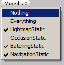

EditorGUI.EnumMaskField
Obsolete public static Enum EnumMaskField(Rect position,
string label,
Enum enumValue,
GUIStyle style);
Obsolete public static Enum EnumMaskField(Rect position,
GUIContent label,
Enum enumValue,
GUIStyle style);
Parameters
| position | Rectangle on the screen to use for this control. | |
| label | Caption/label for the control. | |
| enumValue | Enum to use for the flags. | |
| style | Optional GUIStyle. |
Returns
Enum A selection BitMask where each bit represents an Enum value index. (Note this returned value is not itself an Enum).
Description 描述
This method is obsolete. Use EditorGUI.EnumFlagsField instead.
Makes a field for enum based masks.

Simple window that shows the enum mask field.